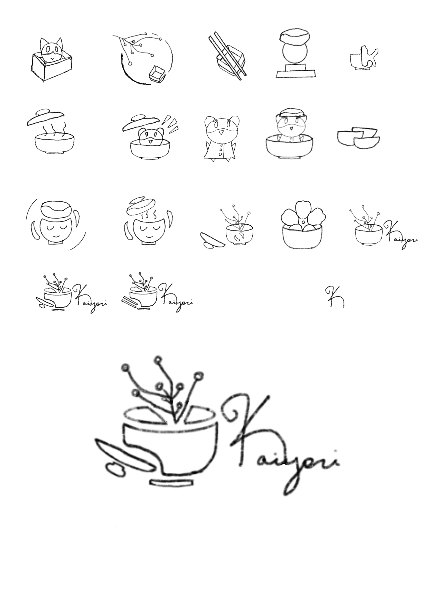
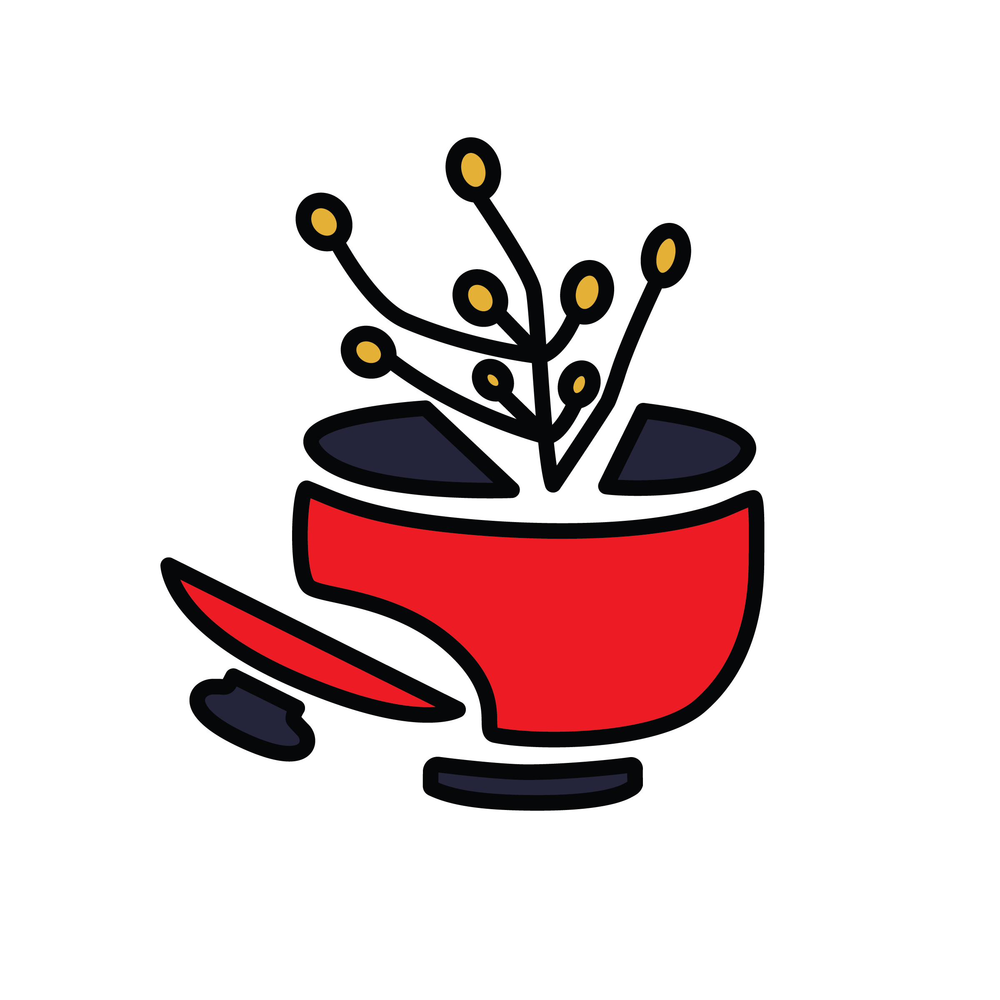
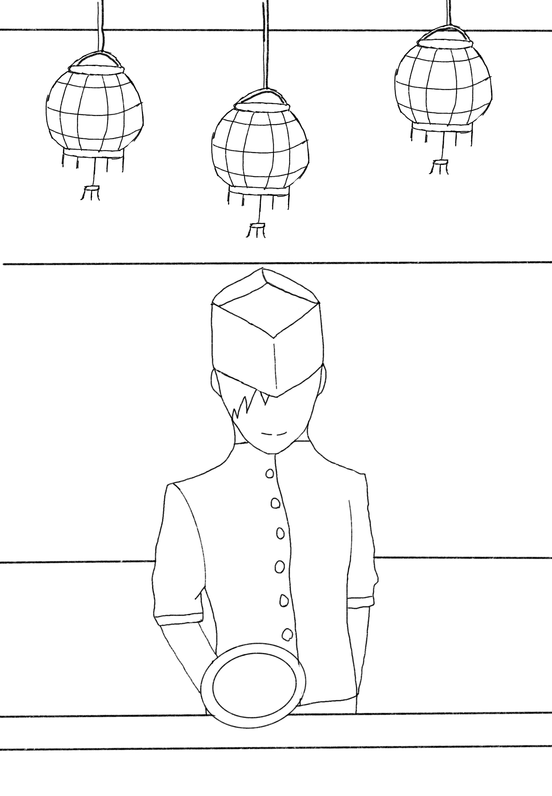
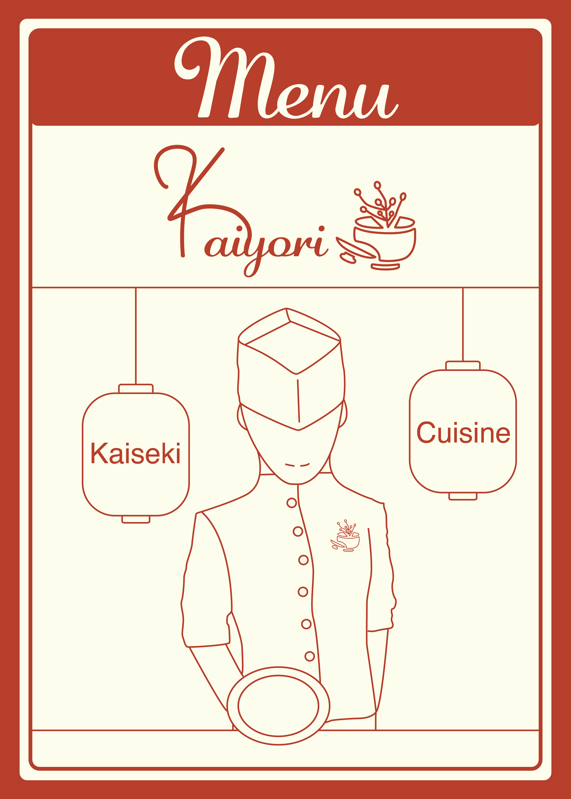
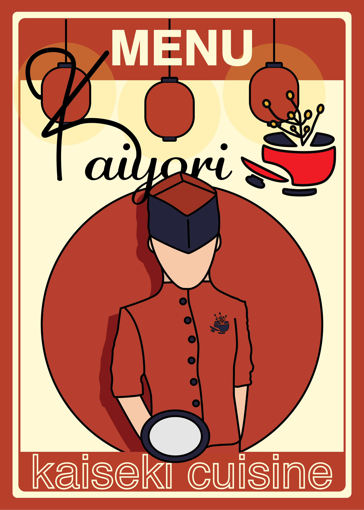

Working Drafts
Drafting the Logo
Intitial Sketches
For the logo, I tried initially sketching a more playful take on the logo to be ‘friendly’, but I realized that I wanted a more traditional approach to the logo design, while still being modern to match the brand's personality.

Final Sketch
Eventually, I was able to create a sketch that appears modern yet traditional, and still looks friendly to potential customers. The logo is a rice plant, or 'Oryza sativa', ectruding out of a soup bowl with the lid on the side, to convey the art of traditional cooking.

Food Menu Design
Food Menu Sketch
For the cover of the food menu, I wanted to convey the hospitality of Kaiyori through the sketch I created of a chef serving a dish.

Food Menu Cover Draft
For my first draft of the menu, I realized that it was greatly lacking color and striking elements to make it memorable and bold. I also wanted to properly incorporate the logo in a way that it stands out.

Food Menu Cover Final Draft
The final draft of the menu properly conveys the title, with striking bold elements to make it a unique menu cover. It also conveys the cohesive color palette of the brand, with the addition of portraying the restaurant's hospitality.
